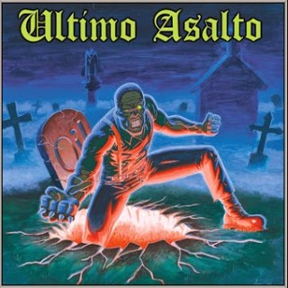

Último Asalto

Ultimo Asalto es una banda Oi! de Barcelona formada en 1998. La mayoría de sus integrantes son de la localidad, pero uno de ellos es de Caracas, Venezuela. Son abiertamente apolíticos, aunque a menudo son objeto de controversia. Para mí, personalmente, es una gran banda.
1999 - Soldados Del Asfalto EP
- 01 - Soldados Del Asfalto
- 02 - El Oi! Es Violencia
- 03 - Nuestro Orgullo Pasado
- 04 - Skinhead
2000 - Nuestro Orgullo Pasado
- 01 - Nuestro Orgullo Pasado
- 02 - Soldados del Asfalto
- 03 - El Oi! es Violencia
- 04 - Terror Hooligan
- 05 - Comando Mata-Jipis
- 06 - Vivos y Pateando
- 07 - Apoliticos
- 08 - Skinhead
- 09 - Ultimo Asalto
- 10 - Un Dia de Añoranza